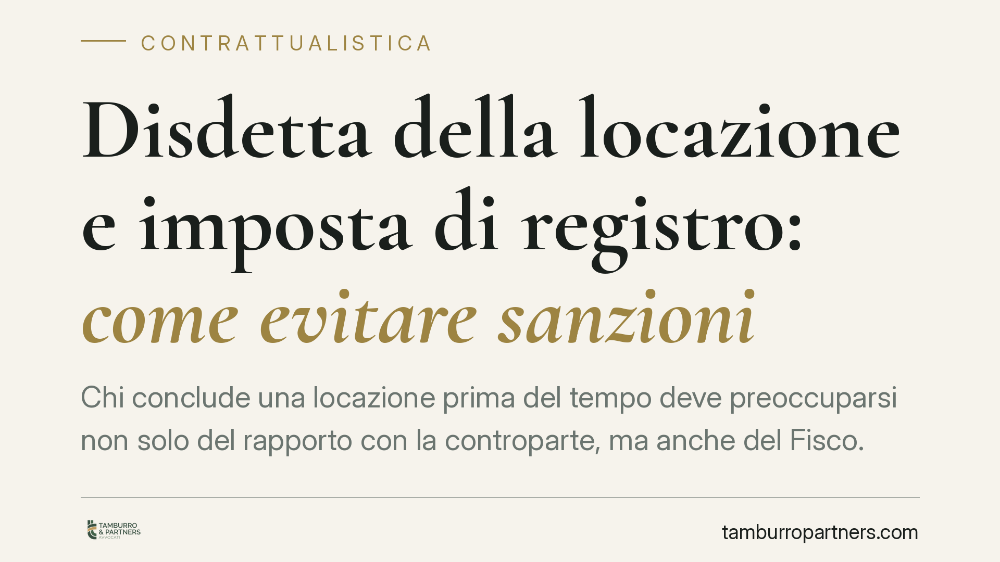

Disdetta della locazione e imposta di registro: come evitare sanzioni
Chi conclude una locazione prima del tempo deve preoccuparsi non solo del rapporto con la controparte, ma anche del Fisco. La cessazione va documentata e registrata: senza prova formale, l'Agenzia delle Entrate può pretendere l'imposta di registro come se il contratto fosse ancora in corso. Vediamo perché la forma conta e cosa fare in concreto.

Il caso
La questione è ricorrente. Un contratto di locazione si interrompe prima della scadenza naturale, l'immobile resta vuoto o viene riconsegnato, ma le parti non formalizzano correttamente la cessazione presso l'Agenzia delle Entrate. Mesi dopo arriva la richiesta dell'ufficio: imposta di registro dovuta per l'intera annualità, perché agli atti il contratto risulta ancora efficace.
Il punto critico è la distanza tra la realtà dei fatti (rapporto ormai chiuso) e la situazione documentale (contratto formalmente attivo). Per il Fisco conta ciò che risulta registrato.
> Nota di verifica. Una parte della prassi giurisprudenziale è talvolta ricondotta a un'ordinanza della Corte di Cassazione, Sez. VI civile, del 2021. Il numero e la massima esatta di tale pronuncia devono essere verificati su banca dati ufficiale prima della pubblicazione: non li riportiamo qui come dato certo per non attribuire un principio a un provvedimento non confermato.
Inquadramento normativo
Occorre distinguere due piani.
Piano civilistico – uscita dal contratto. Nelle locazioni abitative, il conduttore può recedere per gravi motivi con preavviso, quale facoltà riconosciuta dalla legge: si vedano l'art. 3 e l'art. 4 della L. 9 dicembre 1998, n. 431. Non si tratta necessariamente di una clausola contrattuale: è una possibilità prevista direttamente dalla normativa speciale sulle locazioni abitative. La disdetta alla scadenza segue invece i termini di preavviso indicati dalla legge e dal contratto.
Piano fiscale – cessazione presso il Fisco. L'uscita dal contratto non estingue automaticamente gli obblighi verso l'Agenzia delle Entrate. La cessazione anticipata va comunicata e registrata tramite l'apposito modello RLI, con versamento dell'eventuale imposta dovuta fino al momento della chiusura. Finché la cessazione non risulta all'ufficio, il contratto continua a essere considerato produttivo di effetti ai fini dell'imposta di registro.
È importante evitare l'assolutismo. La cessazione di fatto e la prova della riconsegna dell'immobile possono avere rilievo in sede di contestazione, ma restano elementi da dimostrare: il modo più sicuro per prevenire il contenzioso è la registrazione tempestiva, non la ricostruzione successiva.
Implicazioni pratiche
Per il proprietario il rischio è concreto: pagare l'imposta su un canone che non incassa più, o subire una ripresa fiscale con sanzioni e interessi. Il fatto che l'immobile sia vuoto non basta, di per sé, a esonerare dall'obbligo se la cessazione non è stata formalizzata.
Per il conduttore la corretta gestione dell'uscita evita responsabilità residue e contestazioni sulla durata effettiva del rapporto.
In entrambi i casi la lezione è la stessa: la volontà di chiudere il rapporto deve tradursi in atti documentabili e registrati. Una comunicazione verbale, o una semplice consegna delle chiavi senza tracciabilità, difficilmente regge a una verifica.
Cosa fare in concreto
- Comunica per iscritto e in forma tracciabile. Invia disdetta o recesso con PEC o raccomandata A/R, così da avere prova certa della data e del contenuto.
- Rispetta i termini di preavviso previsti dalla legge e dal contratto: per il recesso del conduttore per gravi motivi, verifica il preavviso richiesto dalla L. 431/1998.
- Registra la cessazione con il modello RLI presso l'Agenzia delle Entrate entro i termini, versando l'eventuale imposta dovuta fino alla chiusura.
- Redigi un verbale di riconsegna dell'immobile, sottoscritto da entrambe le parti e datato, che attesti la data effettiva del rilascio.
- Conserva tutta la documentazione (comunicazioni, ricevute di registrazione, verbale) per il periodo utile a fronte di eventuali controlli.
Chiarimento dei termini
Disdetta: manifestazione di volontà di non rinnovare il contratto alla scadenza, nei termini di preavviso previsti.
Recesso: uscita anticipata dal rapporto prima della scadenza; per il conduttore abitativo è possibile per gravi motivi ai sensi della L. 431/1998.
Registrazione della cessazione: adempimento fiscale, distinto dalla comunicazione alla controparte, con cui si dà atto all'Agenzia delle Entrate della chiusura del contratto.
Conclusione
Chiudere una locazione richiede due passaggi distinti: informare la controparte e informare il Fisco. Trascurare il secondo espone al rischio di pagare imposte su un rapporto ormai finito. È opportuno verificare, prima di ogni comunicazione, quale strumento si stia utilizzando e quali adempimenti fiscali restino da assolvere.
---
Contributo informativo a cura di Tamburro & Partners - Avv. Giuseppe Tamburro. Non costituisce parere legale.
Ogni contratto ha il suo equilibrio.
Se vuoi una revisione delle clausole o una redazione su misura, scrivi allo studio. Ti rispondiamo entro un giorno lavorativo.